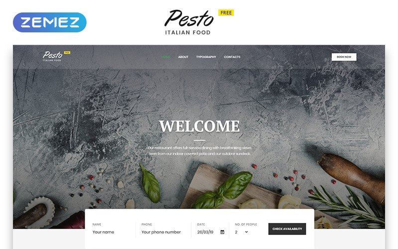

Experiments with Google
Chrome Experiments is a showcase of work by coders who are pushing the boundaries of web technology, creating beautiful, unique web experiences. You'll find helpful links throughout the site for creating your own experiments, and you can also explore resources like WebGL Globe and our workshop of tools.
Google Experiments

Nature
The words nature and natural are used for all the things that are normally not made by humans. Things like weather, organisms, landforms, celestial bodies and much more are part of nature. Scientists study the way the parts of nature work. Things that have been made by people are said to be man-made or called artifacts.There are natural sciences that study different parts of nature, for example the science of ecology is about plants and animals as a whole, while biology studies every type of living thing.From one point of view, humans are a prime example of nature, and are the most widely studied natural inhabitants of the planet earth. Humans interact with each other in their natural environment on a constant basis.

Sea
The sea, the world ocean, or simply the ocean is the connected body of salty water that covers about 71% of Earth's surface (361,132,000 square kilometres [139,434,000 sq mi]), with a total volume of roughly 1,332,000,000 cubic kilometres [320,000,000 cu mi].[1] It moderates Earth's climate and has important roles in the water cycle, carbon cycle, and nitrogen cycle. It has been travelled and explored since ancient times, while the scientific study of the sea—oceanography—dates broadly from the voyages of Captain James Cook to explore the Pacific Ocean between 1768 and 1779. The word sea is also used to denote smaller, partly landlocked sections of the ocean and certain large, entirely landlocked, saltwater lakes, such as the Caspian Sea and the Dead Sea.

Leaf
A leaf (plural leaves) is the principal lateral appendage of the vascular plant stem,[1] usually borne above ground and specialized for photosynthesis. The leaves and stem together form the shoot.[2] Leaves are collectively referred to as foliage, as in "autumn foliage".[3][4] In most leaves, the primary photosynthetic tissue, the palisade mesophyll, is located on the upper side of the blade or lamina of the leaf[1] but in some species, including the mature foliage of Eucalyptus,[5] palisade mesophyll is present on both sides and the leaves are said to be isobilateral.